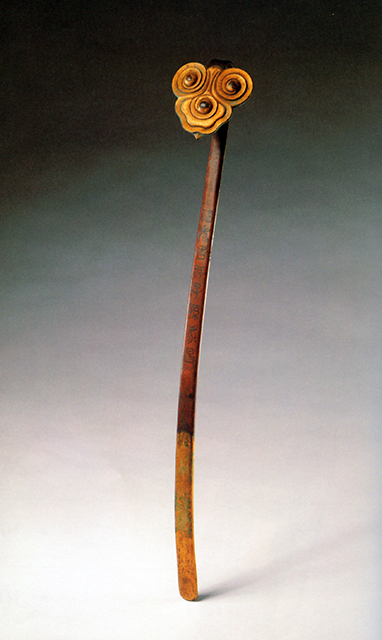
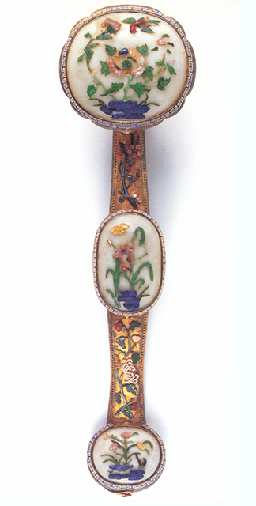
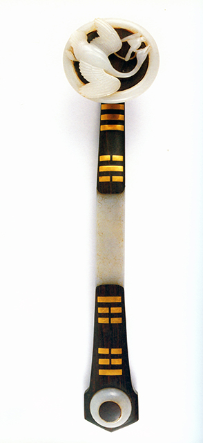
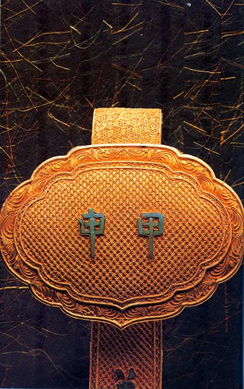

“亚丑”钺，商代，1965年出土于山东青州苏埠屯，现藏山东省博物馆。“亚丑”钺通长32.7厘米，刃宽34.5厘米，长方形，方内，双穿，两肩有棱，弧形刃，器身作透雕人面纹，极富威严。钺正反两面铭“亚丑”二字，故得此名。
亲朋好友会面、通信常以“万事如意”、“吉祥如意”等吉利的语言来相互祝福。如意，是象征吉祥的传统工艺美术制品。柄端作“心”形的，用竹、骨、铜、玉制作，法师讲经时，常手持如意一柄，记经文于上，以备遗忘。最早的如意，柄端作手指之形，是民间的一种挠痒痒用的东西，俗称“老头乐”，所谓“手所不能至，搔之可如意”。清《事物异名录》云：“如意者，古之爪杖也”。我国古代有“搔杖”(如今叫痒痒挠)，又有记事于上的“笏”(亦称“朝笏”、“手板”)，如意则兼二者之用。后来，其形态发生分化，一支保留实用功能，在民间流传；另一支强调吉祥含义，向纯粹陈设珍玩演化，有手持如意的菩萨像。如意兼二者之用。后来，其形态发生分化，一支保留实用功能，在民间流传；另一支强调吉祥含义，向纯粹陈设珍玩演化，有手持如意的菩萨像。
如意约产生于魏晋时期，相传吴帝孙权曾得到玉如意一柄。南朝刘义庆《世说新语》及初唐编撰的《晋书》都有关于如意的记载。只是当时的材质、形状等现在都不明了。如意在魏晋时期非常走红，成为了帝王及达官贵人的手中之物。除用它搔痒，还用它决策大事等，其威势有些近似了权杖。如南朝的韦睿在徐州的战事中，就是用了“如意”指挥千军万马，一日数合，取得了大胜。如意也是文人雅士的所喜爱之物，吟诗咏赋时，利用它作为打节拍之用，清雅悠闲之时还可以随身带之玩赏。如意还是舞蹈的道具，即“如意舞”。梁简文帝萧纲的诗中有：“腕动苕花（苕华喻指美人）玉，衫随如意风”。东吴的孙和，曾在月下作如意舞，不慎打伤所宠爱邓夫人脸颊，后虽治好了，但脸上仍留下了瘢痕。引诱后宫人效仿，遂成古代点靥之风。
从唐代开始，制作的如意已经很讲究了，而且造型丰富多彩，赢得了人们的青睐。到了明、清时期它从实用品逐渐转向了一种陈设品，供人们欣赏娱乐，柄端为灵芝形、云朵形状等。主体呈流线形，柄微曲，整体造型优美华丽。制作如意所选用的材料十分珍贵，有金、玉、水晶、象牙、玛瑙、檀木等等。
清代金属如意一般以金、银、铜、铁和各种合金为质地，经铸造、焊接成型，再镀以金、錾刻、累丝、珐琅、镶嵌等工艺手段加以装饰。其中金银错工艺，技术高超，所嵌金银丝，严丝合缝；立体累丝更为精巧，在累丝前，先将炭研成细末，用白芨草泡制的粘液调和成可塑的材料，塑成各种图案、物象，谓之“堆灰”，再将细如纤毛的金银丝盘累其上，最后烧去炭模，立成立体中空、玲珑剔透的工艺品。清宫金属如意以金质为多，富丽堂皇。皇帝大婚时，皇后凤銮内必先放置金如意，坤宁宫龙凤喜床中央要制一装有珠宝及金银小如意各两个的宝瓶，四角在各置如意一柄。皇帝寿辰，更以金如意为上。乾隆六十大寿时，王公大臣们献上的一套六十柄八成金累丝干支纪年如意，其累丝玲珑剔透，六十柄如意合一甲子，真是极尽皇家宫廷的排场与奢华！
玉石如意，因如意造型的细长柄、回折头极易折断，对玉料的要求很高。玉石如意的质料主要白玉、青玉、墨玉、翡翠、玛瑙、水晶、孔雀石、绿松石等。从造型和工艺上可分为三类：一是仿植物枝、果的自然造型如意，作品充满了写实意味；二是几何形如意，这种如意对材质的要求很高，有的作品很大，是置于木座上的陈设品。三是将玉石镶嵌于如意上的镶嵌如意。清代创造出有首、中、尾的三镶、五镶形式的如意。即以紫檀、珐琅、金银等材料作柄，柄首、腰、尾均作椭圆，分别嵌镶玉饰，多种材质，珠联璧合。乾隆时期创造的三镶玉如意，尤其是嵌古玉者，更是深得乾隆皇帝的喜爱，叹为“汉玉香檀接柄长”、“得一含三趣可祥”。
瓷如意数量不多，弥足珍贵。它的装饰手段主要是粉彩。粉彩的独特之处是，在彩料中掺入一种名为“玻璃白”的白色材料，给人以“粉”的质感，并因用法不同，产生不同的色彩效果。在装饰纹样上，粉彩如意还经常借用珐琅彩的轧道工艺和“锦上添花”技法，配以花鸟、山水、人物、百兽的通景画或开光装饰，形成中西合璧、颇具时代特色的工艺技法。瓷如意的另一个主要特点是运用镂雕工艺，在瓷胎上镂空雕饰“松竹梅”、“八宝莲花”、以及“福”、“寿”字样等寓意吉祥的图案。瓷胎上镂空技法始于乾隆时期，工艺复杂，烧成难度大鲜见于陶瓷装饰，而在乾隆时的如意运用这种技法，足见皇帝对如意的偏爱。
如意雕刻和镶嵌的花纹图案更是丰富多样：山水人物有“麻姑献寿”、“刘海戏蟾”等人物故事；珍禽异兽有“松鹤延年”、“双狮戏珠”、“太平有象”等造型；花鸟虫鸟则有“万年青”、“鸳鸯荷花”等图案。吉祥图案丰富多彩，多福长寿、吉祥平安、 百年好和、中奎登科等等寓意无所不有。
清代如意深受整个社会的喜爱，故有 “椒戚都趋珠宝市，一时如意价连城”的诗句。在皇宫中的节庆礼仪中，如意被尊为上品，不可或缺。清代皇帝好如意，是历代皇帝所不能及的，皇上、后妃的宝座旁、寝殿中均摆有如意，以示吉祥、顺心。这可从清宫的档案乃至皇家的诗画中可见到。正所谓“处处座之旁，率陈如意常”（乾隆皇帝诗）。每逢皇帝登基、大婚，册立后妃，皇后和妃嫔生日，节日庆典及喜庆佳日，皆取其寓意吉祥，以如意为先。大臣们敬献如意以“九九如意”最为吉利，就是用九柄如意为一盒，九盒共八十一柄如意。在我国古代封建社会崇尚九五之数，九九是最大的数，以示天子的尊贵，借此来祝福，皇帝万年长青。皇帝身边的大臣有的为了加官得宠，也进贡珍奇的如意等。在故宫博物院珍藏的如意中，就保存有进贡者题款的如意。据说：慈禧太后在六十寿辰时，在收寿礼时，仅如意这项就收到了珍贵的精品八十件。由于清朝皇室对如意的喜爱和重视，它还是皇帝选后的信物和凭证，据说慈禧太后为光绪皇帝选后妃时，慈禧太后上坐，光绪侍立，桌上摆置着玉如意一柄，红荷包两对，作为选定之物。按清代宫廷规矩，选中皇后者以如意予之，选中妃者以红绣荷包予之。结果，在慈禧太后授意之下，光绪帝将玉如意授予隆裕，立为皇后，另外把红绣荷包授予珍妃、瑾妃选入宫。如意还常作为帝后赏赐皇室成员、地方官员的礼品，就连一些外国的使者有时也能得到皇帝馈赠的如意。在当时，若大臣得到皇帝赏赐的如意，便可光宗耀祖，身价十倍。清宫的推崇也波及民间，到了清代中后期，如意在民间也越来越普遍，逢年过节都用如意做礼物，贵重的如意还作为镇宅之宝，成为人们身份、地位的象征。更有人家将如意给与即将出嫁的女儿，也是祝愿女儿能够找到一位称心如意的郎君相伴一生。
在邮票的发行上也有选了如意图案的。台湾于1966年发行了“清代如意”邮票，其图案均出自清代的“白玉如意”、“珊瑚如意”、“红木镶宝如意”、“金漆如意”四件。丁卯年，邮电部发行了首日封，图案为“兔捧如意”。1987年台湾再度发行了“清代如意”的邮票，表达了海峡两岸同胞都希望以此来表达“事事如意”的真情永在。更有意思的是如意译成英文为“交好运”的意思，很多的外国人被它的吉祥名字和独特精美的造型而吸引，购买了工艺品带回国送给亲朋好友。它为中外的文化交流、宏扬中华文化作出了贡献。
“如意”在我国是一种代表吉祥的珍玩，具有很高的艺术、鉴赏价值。人们喜爱它、收藏它、观赏它，并寄托着如意吉祥，事事如意的美好心愿。